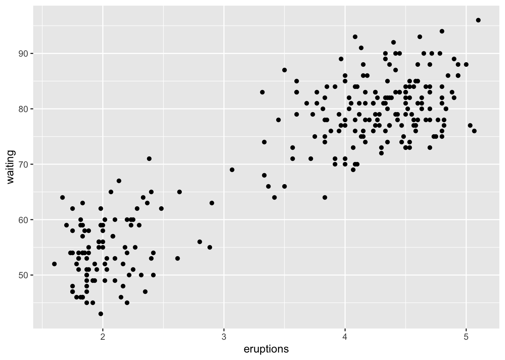
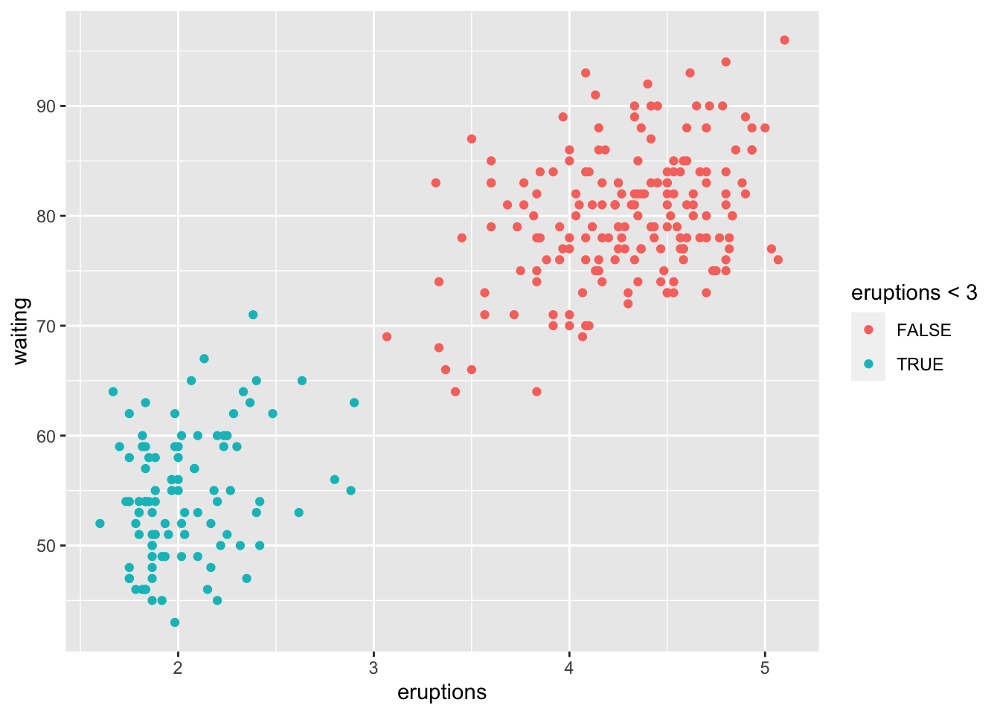
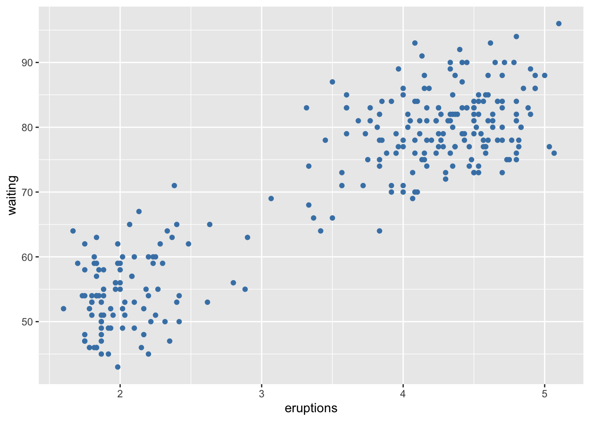
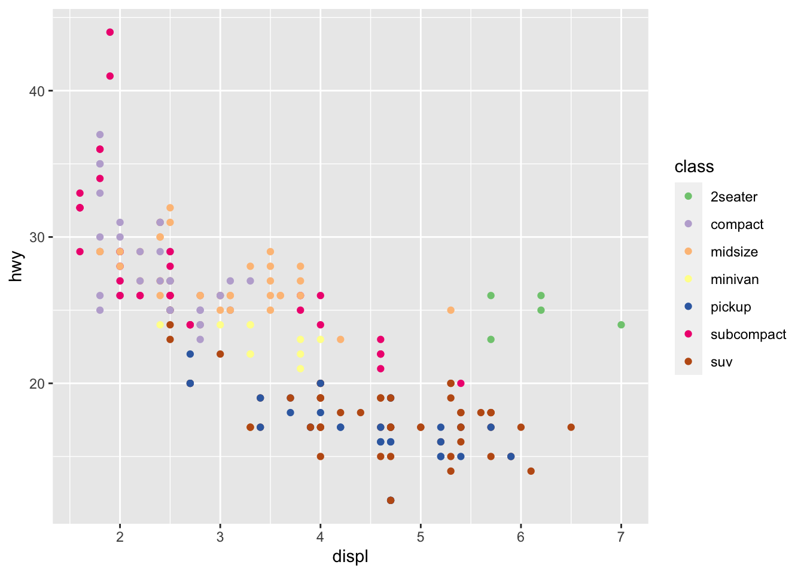
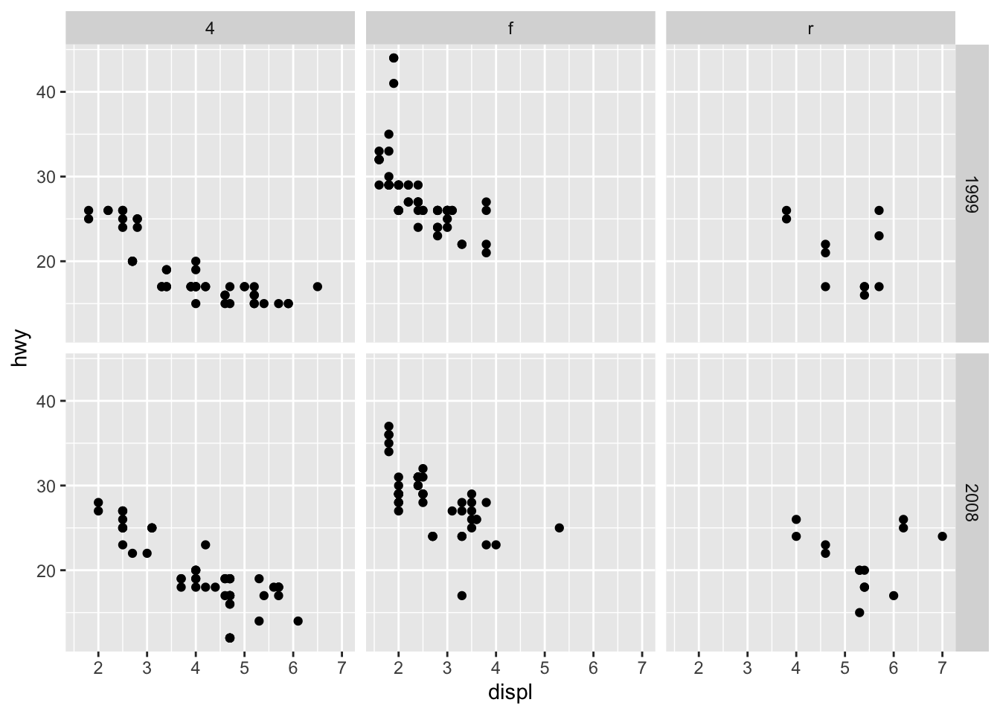
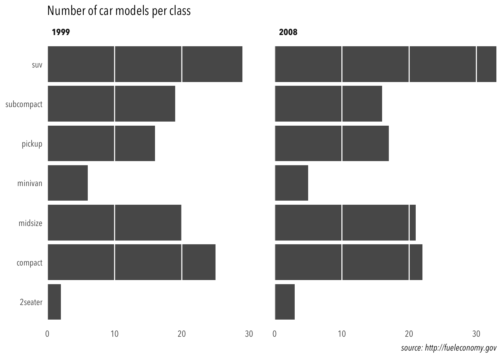
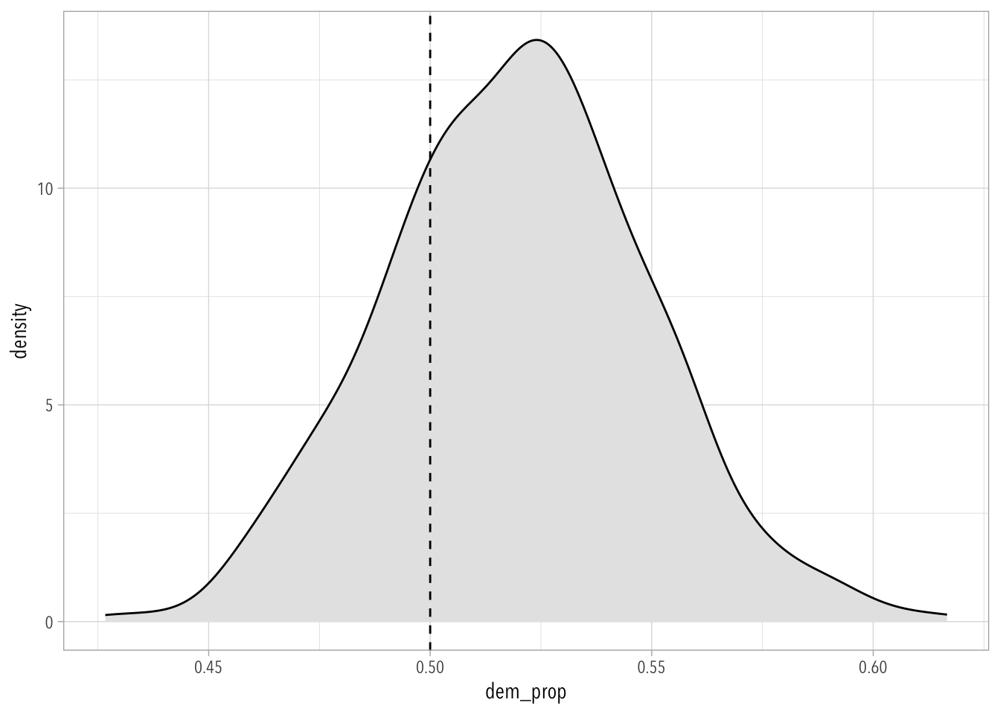

The actual exercises for this week’s homework are taken almost verbatim from a subset of Thomas Pedersen’s online workshop. He starts going over all of them around the 43:35 minute mark.
Simulation.
Learning how to generate data will help us understand statistics better. I promise!
Note that exercise questions are depicted with blue and hints are depicted with green.
Questions…
Hints…
3.1ggplot2
3.1.1 Introduction
We will look at the basic ggplot2 use using the faithful dataset, giving information on the eruption pattern of the Old Faithful geyser in Yellowstone National Park.
Code
library(tidyverse) ## ggplot2 is part of the tidyversedata("faithful") ## this creates a copy of `faithful` in your global environment.# Basic scatterplotggplot(data = faithful, mapping =aes(x = eruptions, y = waiting) ) +geom_point()

Code
# Data and mapping can be given both as global (in ggplot()) or per layerggplot() +geom_point(mapping =aes(x = eruptions, y = waiting), data = faithful)
If an aesthetic is linked to data it is put into aes()
Code
faithful |>ggplot() +geom_point(aes(x = eruptions, y = waiting, color = eruptions <3))

If you simple want to set it to a value, put it outside of aes()
Code
ggplot(faithful) +geom_point(aes(x = eruptions, y = waiting),color ='steelblue')

Some geoms only need a single mapping and will calculate the rest for you—e.g., histograms and boxplots.
Hint 1: For polygons you can map two different color-like aesthetics: color (the color of the stroke) and fill (the fill color)
3.1.1.3 Exercise
Add a line that separates the two point distributions. See ?geom_abline for how to draw straight lines from a slope and intercept.
Code
ggplot(faithful) +geom_point(aes(x = eruptions, y = waiting))
3.1.2 The “Statistics” Layer
We will use the mpg dataset giving information about fuel economy on different car models.
Every geom has a stat. This is why new data (count) can appear when using geom_bar().
Code
data("mpg") ## this dataset lives in the ggplot2 packagempg |>ggplot(aes(x = class)) +geom_bar()
The stat can be overwritten. If we have pre-computed count we don’t want any additional computations to perform and we use the identity stat to leave the data alone.
Code
mpg_counted <- mpg |>group_by(class) |>summarize(count =n())mpg_counted |>ggplot() +geom_bar(aes(x = class, y = count), stat ='identity')
Most obvious “geom” + “stat” combinations have a dedicated geom constructor. For example, the one above is available directly as geom_col().
Code
ggplot(mpg_counted) +## `mpg_counted` is a summarized version of `mpg`geom_col(aes(x = class, y = count))
Typical geoms that rely heavily on “statistics layers” are geom_boxplot(), geom_density(), geom_smooth(), and geom_jitter().
This is the most confusing aspect about ggplot2. Thomas Pederson says we should think about it as a “data transformation” pipeline that sits in between the input data and the geom we want to use. Don’t worry about it for now! We will skip the exercises here!
3.1.3 Scales
Scales define how the mapping you specify inside aes() should happen. All mappings have an associated scale even if not specified explicitly.
Code
ggplot(mpg) +geom_point(aes(x = displ, y = hwy, color = class))
We can take control by adding one explicitly. All scales follow the same naming conventions—i.e., scale_<aes>_<type>.
Code
ggplot(mpg) +geom_point(aes(x = displ, y = hwy, color = class)) +scale_color_brewer(type ='qual')

Positional mappings (x and y) also have associated scales.
Use RColorBrewer::display.brewer.all() to see all the different palettes from Color Brewer and pick your favorite. Modify the code below to use it.
Code
ggplot(mpg) +geom_point(aes(x = displ, y = hwy, color = class)) +scale_color_brewer(type ='qual')
3.1.3.2 Exercise
Modify the code below to create a bubble chart (scatterplot with size mapped to a continuous variable) showing cyl with size. Make sure that only the present amount of cylinders (4, 5, 6, and 8) are present in the legend.
Code
ggplot(mpg) +geom_point(aes(x = displ, y = hwy, color = class)) +scale_color_brewer(type ='qual')
Hint: The breaks argument in the scale is used to control which values are present in the legend.
3.1.3.3 Exercise
Modify the code below so that color is no longer mapped to the discrete class variable, but to the continuous cty variable. What happens to the guide?
Code
ggplot(mpg) +geom_point(aes(x = displ, y = hwy, color = class, size = cty))
The type of guide can be controlled with the guide argument in the scale, or with the guides() function. Continuous colors have a gradient color bar by default, but setting it to legend will turn it back to the standard look. What happens when multiple aesthetics are mapped to the same variable and uses the guide type?
Code
ggplot(mpg) +geom_point(aes(x = displ, y = hwy, color = cty, size = cty))
3.1.4 Facets
The facet defines how data is split among panels. The default facet (facet_null()) puts all the data in a single panel, while facet_wrap() and facet_grid() allows you to specify different types of small multiples.
Code
ggplot(mpg) +geom_point(aes(x = displ, y = hwy)) +facet_wrap(~ class)
Code
ggplot(mpg) +geom_point(aes(x = displ, y = hwy)) +facet_grid(year ~ drv)

3.1.4.1 Exercise
One of the great things about facets is that they share the axes between the different panels. Sometimes this is undesirable though, and the behavior can be changed with the scales argument. Experiment with the different possible settings in the plot below:
Code
ggplot(mpg) +geom_point(aes(x = displ, y = hwy)) +facet_wrap(~ drv)
3.1.5 Theme
Theming defines the feel and look of your final visualization and is something you will normally defer to the final polishing of the plot. It is very easy to change looks with a pre-built theme
Further adjustments can be done in the end to get exactly the look you want
Code
ggplot(mpg) +geom_bar(aes(y = class)) +facet_wrap(~year) +labs(title ="Number of car models per class",caption ="source: http://fueleconomy.gov",x =NULL,y =NULL) +scale_x_continuous(expand =c(0, NA)) +theme_minimal() +theme(text =element_text('Avenir Next Condensed'),strip.text =element_text(face ='bold', hjust =0),plot.caption =element_text(face ='italic'),panel.grid.major =element_line('white', linewidth =0.5),panel.grid.minor =element_blank(),panel.grid.major.y =element_blank(),panel.ontop =TRUE )

3.1.5.1 Exercise
Themes can be overwhelming, especially as you often try to optimize for beauty while you learn. To remove the last part of the equation, the exercise is to take the plot given below and make it as hideous as possible using the theme function. Go absolutely crazy, but take note of the effect as you change different settings.
Code
mpg |>ggplot(aes(y = class, fill = drv)) +geom_bar() +facet_wrap(~year) +labs(title ="Number of car models per class",caption ="source: http://fueleconomy.gov",x ='Number of cars',y =NULL )
3.2 Simulation
3.2.1 Voting Poll Example
There are many correct ways of simulating data.
This exercise takes off right were Steve left off (here). I have modified this code somewhat so that it’s easier to use for visualization—i.e., I created a function called simulation_votes(). We may eventually learn more of this, but for the moment let me explain how this function works.
First, save the function to your global environment with the source() function.
# A tibble: 90,000 × 5
id vote dem_prob_pop sample_size num_sims
<int> <chr> <chr> <chr> <chr>
1 1 Dem 0.75 90 1000
2 1 Rep 0.75 90 1000
3 1 Dem 0.75 90 1000
4 1 Dem 0.75 90 1000
5 1 Dem 0.75 90 1000
6 1 Rep 0.75 90 1000
7 1 Rep 0.75 90 1000
8 1 Dem 0.75 90 1000
9 1 Dem 0.75 90 1000
10 1 Dem 0.75 90 1000
# ℹ 89,990 more rows
The following chunk of code replicates what we did in class:
Code
## First I'll set up the ggplot2 theme I personally like best.## You might not have this font if you are on a Windows computertheme_set(theme_light(base_family ="Avenir Next Condensed")) sims <-simulation_votes(dem_prob_pop =0.52, sample_size =300, num_sims =500)results <- sims |>group_by(id) |>summarize(dem_prop =mean(vote =="Dem"))results
# density plotresults |>ggplot(aes(dem_prop)) +geom_density(fill ="grey90") +geom_vline(xintercept =0.5, linetype ="dashed")

3.2.1.1 Exercise
In the simulation above, what is the average dem_prop? What is the standard deviation of dem_prop? How does this change for different values of sample_size?
3.2.1.2 Exercise
Create five different simulations with different values of sample_size (e.g., 50, 200, 500, 1000, 2000). Put them together into a single dataset and then visualize the results using boxplots. What is going on?
Hint: You can stack together different datasets using the bind_rows() function in the dplyr package.
Hint: You will have to group_by(id, sample_size) to calculate dem_prop.
3.2.1.3 Exercise
Create five different simulations with different values of dem_prob_pop (e.g., 0.49, 0.52, 0.55, 0.58). Put them together into a single dataset and then visualize the results using boxplots. What is going on?
Wickham, Hadley, Mine Çetinkaya-Rundel, and Garrett Grolemund. 2023. R for Data Science. " O’Reilly Media, Inc.".
Source Code
---title: "Week 3"callout-appearance: simplecallout-icon: falseexecute: eval: falseeditor_options: chunk_output_type: consoletoc-depth: 4toc-expand: 4---The purpose of this week's homework is two-fold:1. **Learn how to use [`ggplot2`]() really well.** There are many resources out there to help you out with this---e.g., [Chapter 2](https://r4ds.hadley.nz/data-visualize) and the [Visualize](https://r4ds.hadley.nz/visualize) section in R4DS [-@wickham2023]. Check out [Kieran's book](https://socviz.co/)[-@healy2018] too! The actual exercises for this week's homework are taken almost verbatim from a subset of Thomas Pedersen's [online workshop](https://www.youtube.com/live/h29g21z0a68?feature=shared&t=130). He starts going over all of them around the 43:35 minute mark.2. **Simulation.** Learning how to generate data will help us understand statistics better. *I promise!**Note that exercise questions are depicted with blue and hints are depicted with green.*::: callout-noteQuestions...:::::: callout-tipHints...:::## `ggplot2`### IntroductionWe will look at the basic ggplot2 use using the faithful dataset, giving information on the eruption pattern of the Old Faithful geyser in Yellowstone National Park.```{r}#| message: false#| eval: truelibrary(tidyverse) ## ggplot2 is part of the tidyversedata("faithful") ## this creates a copy of `faithful` in your global environment.# Basic scatterplotggplot(data = faithful, mapping =aes(x = eruptions, y = waiting) ) +geom_point()# Data and mapping can be given both as global (in ggplot()) or per layerggplot() +geom_point(mapping =aes(x = eruptions, y = waiting), data = faithful)```If an aesthetic is linked to data it is put into `aes()````{r}#| eval: truefaithful |>ggplot() +geom_point(aes(x = eruptions, y = waiting, color = eruptions <3))```If you simple want to set it to a value, put it outside of `aes()````{r}#| eval: trueggplot(faithful) +geom_point(aes(x = eruptions, y = waiting),color ='steelblue')```Some geoms only need a single mapping and will calculate the rest for you---e.g., histograms and boxplots.```{r}#| eval: trueggplot(faithful) +geom_histogram(aes(x = eruptions))```Finally, geoms are drawn in the order they are added. The point layer is thus drawn on top of the density contours in the example below:```{r}#| eval: trueggplot(faithful, aes(x = eruptions, y = waiting)) +geom_density_2d() +geom_point()```#### Exercise::: callout-noteModify the code below to make the points larger squares and slightly transparent. See `?geom_point` for more information on the point layer.:::```{r}ggplot(faithful) +geom_point(aes(x = eruptions, y = waiting))```::: callout-tip*Hint 1:* transparency is controlled with `alpha`, and shape with `shape`*Hint 2:* remember the difference between mapping and setting aesthetics*Hint 3:* the `shape` argument can also be controlled via the following numeric values```{r}#| eval: true#| echo: false#| fig-height: 2tibble(s =0:25, x ="", y ="") |>ggplot(aes(x, y, shape = s)) +geom_point(size =8, fill ="pink") +facet_wrap(~ s, nrow =2) +scale_shape_identity() +theme_void()```*Note that shapes 21 to 25 can be assigned `color` (for the stroke) and `fill` values (shown above as pink).*:::#### Exercise::: callout-noteColor the two visible clusters in the histogram with different colors.:::```{r}ggplot(faithful) +geom_histogram(aes(x = eruptions))```::: callout-tip**Hint 1:** For polygons you can map two different color-like aesthetics: `color` (the color of the stroke) and `fill` (the fill color):::#### Exercise::: callout-noteAdd a line that separates the two point distributions. See `?geom_abline` for how to draw straight lines from a slope and intercept.:::```{r}ggplot(faithful) +geom_point(aes(x = eruptions, y = waiting))```### The "Statistics" LayerWe will use the `mpg` dataset giving information about fuel economy on different car models.Every geom has a stat. This is why new data (`count`) can appear when using `geom_bar()`.```{r}#| eval: truedata("mpg") ## this dataset lives in the ggplot2 packagempg |>ggplot(aes(x = class)) +geom_bar()```The stat can be overwritten. If we have pre-computed count we don't want any additional computations to perform and we use the `identity` stat to leave the data alone.```{r}#| eval: truempg_counted <- mpg |>group_by(class) |>summarize(count =n())mpg_counted |>ggplot() +geom_bar(aes(x = class, y = count), stat ='identity')```Most obvious "geom" + "stat" combinations have a dedicated geom constructor. For example, the one above is available directly as `geom_col()`.```{r}#| eval: trueggplot(mpg_counted) +## `mpg_counted` is a summarized version of `mpg`geom_col(aes(x = class, y = count))```::: callout-tipTypical geoms that rely heavily on "statistics layers" are `geom_boxplot()`, `geom_density()`, `geom_smooth()`, and `geom_jitter()`.:::*This is the most confusing aspect about `ggplot2`. Thomas Pederson says we should think about it as a "data transformation" pipeline that sits in between the input data and the geom we want to use. Don't worry about it for now! We will skip the exercises here!*### ScalesScales define how the mapping you specify inside `aes()` should happen. All mappings have an associated scale even if not specified explicitly.```{r}#| eval: trueggplot(mpg) +geom_point(aes(x = displ, y = hwy, color = class))```We can take control by adding one explicitly. All scales follow the same naming conventions---i.e., `scale_<aes>_<type>`.```{r}#| eval: trueggplot(mpg) +geom_point(aes(x = displ, y = hwy, color = class)) +scale_color_brewer(type ='qual')```Positional mappings (x and y) also have associated scales.```{r}#| eval: trueggplot(mpg) +geom_point(aes(x = displ, y = hwy)) +scale_x_continuous(breaks =c(3, 5, 6)) +scale_y_log10()```#### Exercise::: callout-noteUse `RColorBrewer::display.brewer.all()` to see all the different palettes from Color Brewer and pick your favorite. Modify the code below to use it.:::```{r}ggplot(mpg) +geom_point(aes(x = displ, y = hwy, color = class)) +scale_color_brewer(type ='qual')```#### Exercise::: callout-noteModify the code below to create a bubble chart (scatterplot with size mapped to a continuous variable) showing `cyl` with size. Make sure that only the present amount of cylinders (4, 5, 6, and 8) are present in the legend.:::```{r}ggplot(mpg) +geom_point(aes(x = displ, y = hwy, color = class)) +scale_color_brewer(type ='qual')```::: callout-tipHint: The `breaks` argument in the scale is used to control which values are present in the legend.:::#### Exercise::: callout-noteModify the code below so that color is no longer mapped to the discrete `class` variable, but to the continuous `cty` variable. What happens to the guide?:::```{r}ggplot(mpg) +geom_point(aes(x = displ, y = hwy, color = class, size = cty))```::: callout-noteThe type of guide can be controlled with the `guide` argument in the scale, or with the `guides()` function. Continuous colors have a gradient color bar by default, but setting it to `legend` will turn it back to the standard look. What happens when multiple aesthetics are mapped to the same variable and uses the guide type?:::```{r}ggplot(mpg) +geom_point(aes(x = displ, y = hwy, color = cty, size = cty))```### FacetsThe facet defines how data is split among panels. The default facet (`facet_null()`) puts all the data in a single panel, while `facet_wrap()` and `facet_grid()` allows you to specify different types of small multiples.```{r}#| eval: trueggplot(mpg) +geom_point(aes(x = displ, y = hwy)) +facet_wrap(~ class)``````{r}#| eval: trueggplot(mpg) +geom_point(aes(x = displ, y = hwy)) +facet_grid(year ~ drv)```#### Exercise::: callout-noteOne of the great things about facets is that they share the axes between the different panels. Sometimes this is undesirable though, and the behavior can be changed with the `scales` argument. Experiment with the different possible settings in the plot below::::```{r}ggplot(mpg) +geom_point(aes(x = displ, y = hwy)) +facet_wrap(~ drv)```### ThemeTheming defines the feel and look of your final visualization and is something you will normally defer to the final polishing of the plot. It is very easy to change looks with a pre-built theme```{r}#| eval: trueggplot(mpg) +geom_bar(aes(y = class)) +facet_wrap(~year) +theme_minimal()```Further adjustments can be done in the end to get exactly the look you want```{r}#| eval: trueggplot(mpg) +geom_bar(aes(y = class)) +facet_wrap(~year) +labs(title ="Number of car models per class",caption ="source: http://fueleconomy.gov",x =NULL,y =NULL) +scale_x_continuous(expand =c(0, NA)) +theme_minimal() +theme(text =element_text('Avenir Next Condensed'),strip.text =element_text(face ='bold', hjust =0),plot.caption =element_text(face ='italic'),panel.grid.major =element_line('white', linewidth =0.5),panel.grid.minor =element_blank(),panel.grid.major.y =element_blank(),panel.ontop =TRUE )```#### Exercise::: callout-noteThemes can be overwhelming, especially as you often try to optimize for beauty while you learn. To remove the last part of the equation, the exercise is to take the plot given below and make it as hideous as possible using the theme function. Go absolutely crazy, but take note of the effect as you change different settings.:::```{r}mpg |>ggplot(aes(y = class, fill = drv)) +geom_bar() +facet_wrap(~year) +labs(title ="Number of car models per class",caption ="source: http://fueleconomy.gov",x ='Number of cars',y =NULL )```## Simulation### Voting Poll ExampleThere are many correct ways of simulating data.This exercise takes off right were Steve left off ([here](https://github.com/vaiseys/soc-stats-1/blob/main/demos/day-06.R)). I have modified this code somewhat so that it's easier to use for visualization---i.e., I created a *function* called `simulation_votes()`*.* We may eventually learn more of this, but for the moment let me explain how this function works.First, save the function to your global environment with the `source()` function.```{r}#| eval: trueurl <-"https://raw.githubusercontent.com/acastroaraujo/socStats/main/simulation_function_week3.R"source(url)```Second, choose three parameters for the simulation:- `dem_prob_pop`: the probability that the person will vote for "Democrats" in the population- `sample_size`: the number of people in each "poll" (or sample)- `num_sims`: number of simulationsThird, inspect the simulation data set.```{r}#| eval: truesims <-simulation_votes(dem_prob_pop =0.75, sample_size =90, num_sims =1e3)sims```The following chunk of code replicates what we did in class:```{r}#| eval: true## First I'll set up the ggplot2 theme I personally like best.## You might not have this font if you are on a Windows computertheme_set(theme_light(base_family ="Avenir Next Condensed")) sims <-simulation_votes(dem_prob_pop =0.52, sample_size =300, num_sims =500)results <- sims |>group_by(id) |>summarize(dem_prop =mean(vote =="Dem"))results# plot the resultsresults |>ggplot(aes(x = dem_prop)) +geom_histogram(color ="white", boundary = .5, binwidth = .01) +labs(title ="Simulation", subtitle ="dem_prob = 0.52, sample_size = 300, num_sim = 500")# how often does the poll predict the winner?mean(results$dem_prop >0.5)# shade the same plotresults <- results |>mutate(winner =if_else(dem_prop >0.5, "Dem", "Rep"))results |>ggplot(aes(x = dem_prop, fill = winner)) +geom_histogram(color ="white", boundary = .5, binwidth = .01) +scale_fill_brewer(palette ="Set1", direction =-1)# strip plotresults |>ggplot(aes(dem_prop, "")) +geom_boxplot(outlier.shape =NA) +geom_jitter(height =1/5, alpha =0.2)# density plotresults |>ggplot(aes(dem_prop)) +geom_density(fill ="grey90") +geom_vline(xintercept =0.5, linetype ="dashed")```#### Exercise::: callout-noteIn the simulation above, what is the average `dem_prop`? What is the standard deviation of `dem_prop`? How does this change for different values of `sample_size`?:::#### Exercise::: callout-noteCreate five different simulations with different values of `sample_size` (e.g., 50, 200, 500, 1000, 2000). Put them together into a single dataset and then visualize the results using boxplots. What is going on?:::::: callout-tipHint: You can stack together different datasets using the `bind_rows()` function in the dplyr package.Hint: You will have to `group_by(id, sample_size)` to calculate `dem_prop`.:::#### Exercise::: callout-noteCreate five different simulations with different values of `dem_prob_pop` (e.g., 0.49, 0.52, 0.55, 0.58). Put them together into a single dataset and then visualize the results using boxplots. What is going on?:::